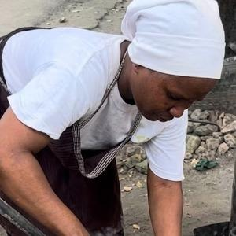

Our impact
What Makange changes, in numbers we can show
Figures below are based on full production of 50 tonnes a month.
At full production: 50 tonnes of Makange a month
Cost of cooking for one day
A typical day of cooking, at today's prices.
| Fuel | Amount per day | Cost per day |
|---|---|---|
| Makange TZS 440/kg, 50kg sack | ~9.5 kg | TZS ~4,200 |
| Wood charcoal ~TZS 900/kg, bought by the sack | ~6 kg | TZS ~5,400 |
| Gas (LPG) ~TZS 3,260/kg, 38kg cylinder | ~1.7 kg | TZS ~5,600 |
Makange saves about TZS 1,200 a day against charcoal and TZS 1,400 against gas.
Less smoke in the kitchen
A little smoke only while lighting. Once lit, Makange burns clean with no smoke. Cooks breathe easier, and pots and walls stay cleaner.
Fewer trees cut
Every sack of Makange takes the place of charcoal made from cut trees. At full production, that is about 190 tonnes of wood left standing every month.
Local jobs
7 full-time staff in production and delivery, 5 WAKALA shops and 20 resellers who earn by selling Makange.
Our customers
“Moto wa Makange unakaa muda mrefu, sufuria hazijai masizi, na mwisho wa mwezi naona faida.”
The Makange fire lasts a long time, my pots don’t get covered in soot, and at the end of the month I see the profit.
Mama Aizak, Mmiliki wa mgahawa, Kunduchi
“Ugali unatoka moto mkali usiokata. Makange inanipa moto huo kila siku, bila kuongezea mkaa kila mara.”
Ugali needs a strong fire that doesn’t die down. Makange gives me that fire every day, without topping up all the time.
Amina, mama ntilie, Kurasini